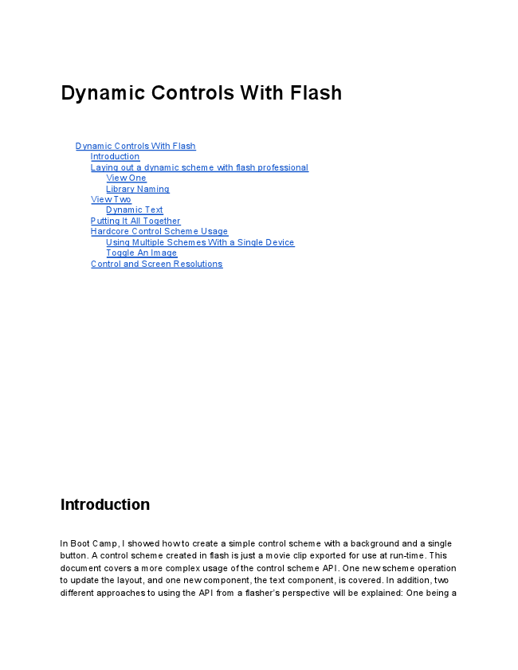
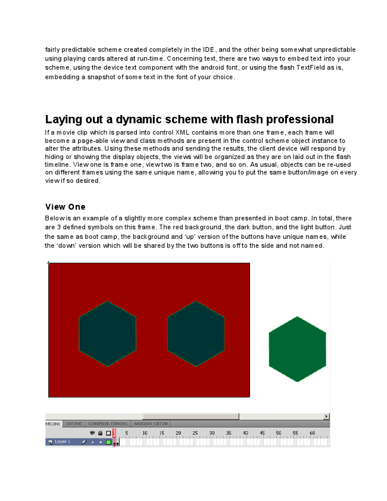
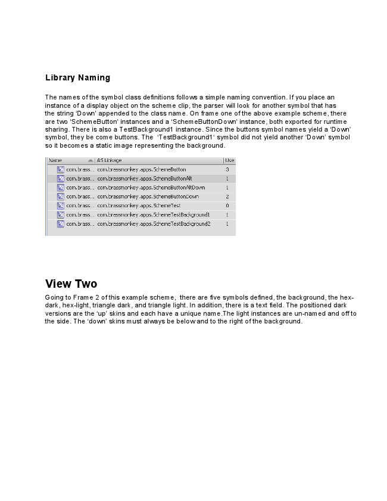
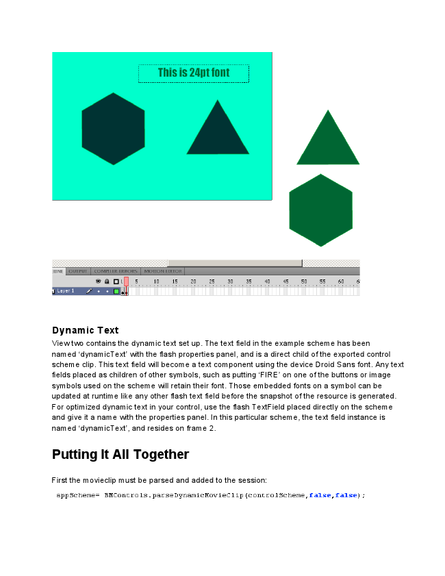
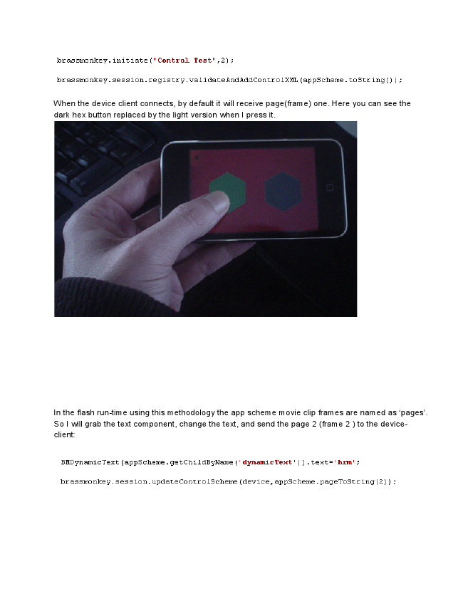
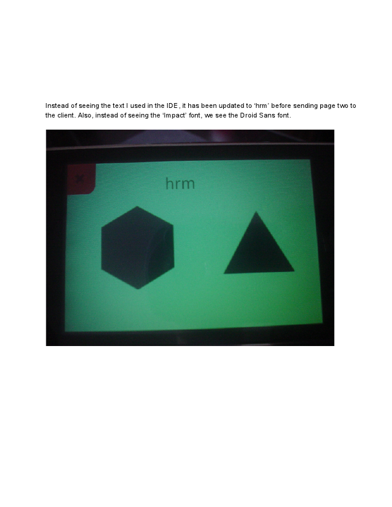
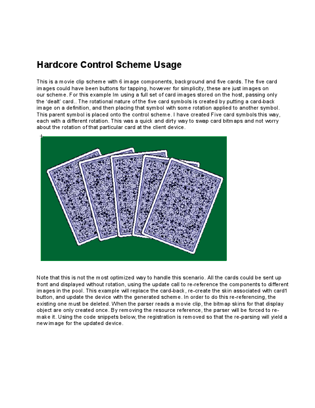
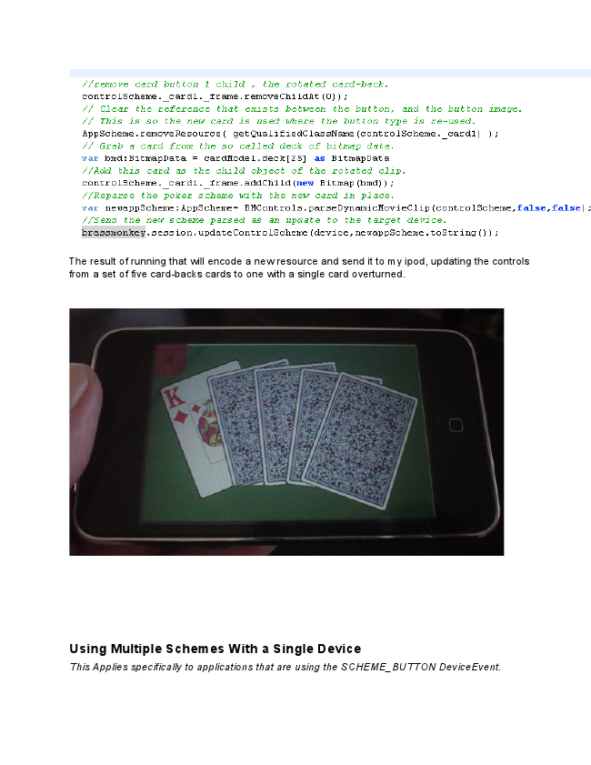
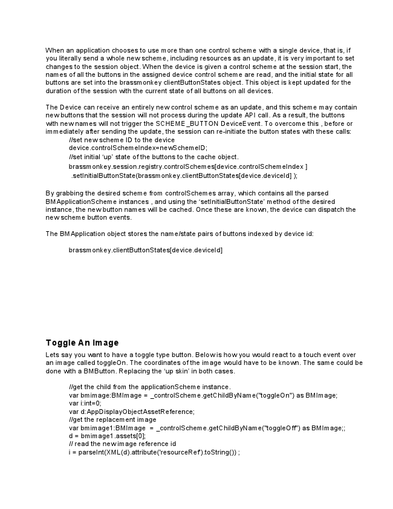
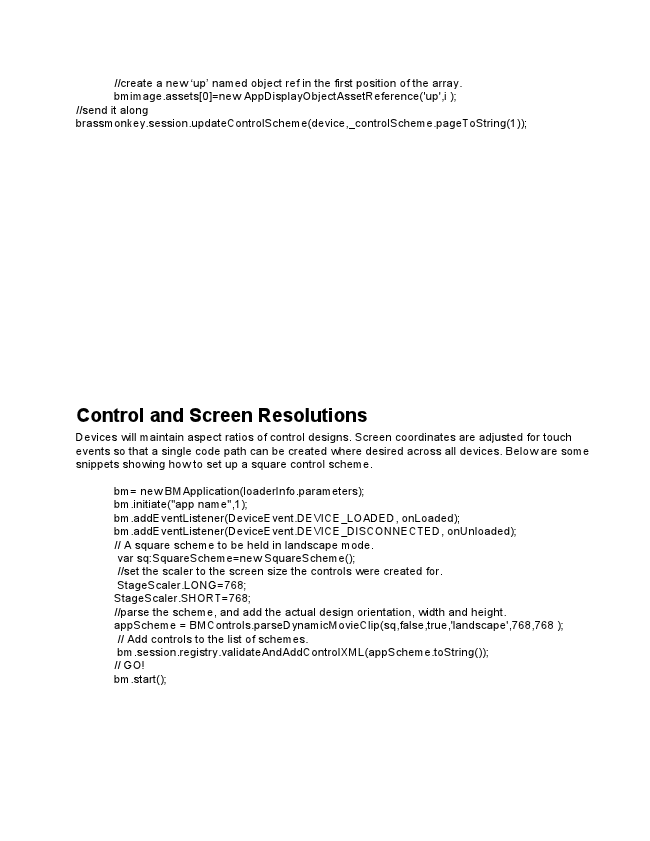

Dynamic Controls With Flash
Dynamic Controls With Flash
Introduction Laying out a dynamic scheme with flash professional
View One Library Naming View Two
Dynamic Text Putting It All Together Hardcore Control Scheme Usage
Using Multiple Schemes With a Single Device Toggle An Image Control and Screen Resolutions
Introduction
In Boot Camp, I showed how to create a simple control scheme with a background and a single button. A control scheme created in flash is just a movie clip exported for use at run-time. This document covers a more complex usage of the control scheme API. One new scheme operation to update the layout, and one new component, the text component, is covered. In addition, two different approaches to using the API from a flasher’s perspective will be explained: One being a

fairly predictable scheme created completely in the IDE, and the other being somewhat unpredictable using playing cards altered at run-time. Concerning text, there are two ways to embed text into your scheme, using the device text component with the android font, or using the flash TextField as is, embedding a snapshot of some text in the font of your choice.
Laying out a dynamic scheme with flash professional
If a movie clip which is parsed into control XML contains more than one frame, each frame will become a page-able view and class methods are present in the control scheme object instance to alter the attributes. Using these methods and sending the results, the client device will respond by hiding or showing the display objects, the views will be organized as they are on laid out in the flash timeline. View one is frame one, view two is frame two, and so on. As usual, objects can be re-used on different frames using the same unique name, allowing you to put the same button/image on every view if so desired.
View One Below is an example of a slightly more complex scheme than presented in boot camp. In total, there are 3 defined symbols on this frame. The red background, the dark button, and the light button. Just the same as boot camp, the background and ‘up’ version of the buttons have unique names, while the ‘down’ version which will be shared by the two buttons is off to the side and not named.

Library Naming
The names of the symbol class definitions follows a simple naming convention. If you place an instance of a display object on the scheme clip, the parser will look for another symbol that has the string ‘Down’ appended to the class name. On frame one of the above example scheme, there are two ‘SchemeButton’ instances and a ‘SchemeButtonDown’ instance, both exported for runtime sharing. There is also a TestBackground1 instance. Since the buttons symbol names yield a ‘Down’ symbol, they be come buttons. The ‘TestBackground1‘ symbol did not yield another ‘Down’ symbol so it becomes a static image representing the background.
View Two
Going to Frame 2 of this example scheme, there are five symbols defined, the background, the hex- dark, hex-light, triangle dark, and triangle light. In addition, there is a text field. The positioned dark versions are the ‘up’ skins and each have a unique name.The light instances are un-named and off to the side. The ‘down’ skins must always be below and to the right of the background.

Dynamic Text View two contains the dynamic text set up. The text field in the example scheme has been named ‘dynamicText’ with the flash properties panel, and is a direct child of the exported control scheme clip. This text field will become a text component using the device Droid Sans font. Any text fields placed as children of other symbols, such as putting ‘FIRE’ on one of the buttons or image symbols used on the scheme will retain their font. Those embedded fonts on a symbol can be updated at runtime like any other flash text field before the snapshot of the resource is generated. For optimized dynamic text in your control, use the flash TextField placed directly on the scheme and give it a name with the properties panel. In this particular scheme, the text field instance is named ‘dynamicText’, and resides on frame 2.
Putting It All Together
First the movieclip must be parsed and added to the session:

When the device client connects, by default it will receive page(frame) one. Here you can see the dark hex button replaced by the light version when I press it.
In the flash run-time using this methodology the app scheme movie clip frames are named as ‘pages’. So I will grab the text component, change the text, and send the page 2 (frame 2 ) to the device- client:

Instead of seeing the text I used in the IDE, it has been updated to ‘hrm’ before sending page two to the client. Also, instead of seeing the ‘Impact’ font, we see the Droid Sans font.

Hardcore Control Scheme Usage
This is a movie clip scheme with 6 image components, background and five cards. The five card images could have been buttons for tapping, however for simplicity, these are just images on our scheme. For this example Im using a full set of card images stored on the host, passing only the ‘dealt’ card.. The rotational nature of the five card symbols is created by putting a card-back image on a definition, and then placing that symbol with some rotation applied to another symbol. This parent symbol is placed onto the control scheme. I have created Five card symbols this way, each with a different rotation. This was a quick and dirty way to swap card bitmaps and not worry about the rotation of that particular card at the client device.
Note that this is not the most optimized way to handle this scenario. All the cards could be sent up front and displayed without rotation, using the update call to re-reference the components to different images in the pool. This example will replace the card-back, re-create the skin associated with card1 button, and update the device with the generated scheme. In order to do this re-referencing, the existing one must be deleted. When the parser reads a movie clip, the bitmap skins for that display object are only created once. By removing the resource reference, the parser will be forced to re- make it. Using the code snippets below, the registration is removed so that the re-parsing will yield a new image for the updated device.

The result of running that will encode a new resource and send it to my ipod, updating the controls from a set of five card-backs cards to one with a single card overturned.
Using Multiple Schemes With a Single Device This Applies specifically to applications that are using the SCHEME_BUTTON DeviceEvent.

When an application chooses to use more than one control scheme with a single device, that is, if you literally send a whole new scheme, including resources as an update, it is very important to set changes to the session object. When the device is given a control scheme at the session start, the names of all the buttons in the assigned device control scheme are read, and the initial state for all buttons are set into the brassmonkey clientButtonStates object. This object is kept updated for the duration of the session with the current state of all buttons on all devices.
The Device can receive an entirely new control scheme as an update, and this scheme may contain new buttons that the session will not process during the update API call. As a result, the buttons with new names will not trigger the SCHEME_BUTTON DeviceEvent. To overcome this , before or immediately after sending the update, the session can re-initiate the button states with these calls:
//set new scheme ID to the device device.controlSchemeIndex=newSchemeID; //set initial ‘up’ state of the buttons to the cache object. brassmonkey.session.registry.controlSchemes[device.controlSchemeIndex ]
.setInitialButtonState(brassmonkey.clientButtonStates[device.deviceId] );
By grabbing the desired scheme from controlSchemes array, which contains all the parsed BMApplicationScheme instances , and using the ‘setInitialButtonState’ method of the desired instance, the new button names will be cached. Once these are known, the device can dispatch the new scheme button events.
The BMApplication object stores the name/state pairs of buttons indexed by device id:
brassmonkey.clientButtonStates[device.deviceId]
Toggle An Image Lets say you want to have a toggle type button. Below is how you would react to a touch event over an image called toggleOn. The coordinates of the image would have to be known. The same could be done with a BMButton. Replacing the ‘up skin’ in both cases.
//get the child from the applicationScheme instance. var bmimage:BMImage = _controlScheme.getChildByName("toggleOn") as BMImage; var i:int=0; var d:AppDisplayObjectAssetReference; //get the replacement image var bmimage1:BMImage = _controlScheme.getChildByName("toggleOff") as BMImage;; d = bmimage1.assets[0]; // read the new image reference id i = parseInt(XML(d).attribute('resourceRef').toString()) ;

//create a new ‘up’ named object ref in the first position of the array. bmimage.assets[0]=new AppDisplayObjectAssetReference('up',i ); //send it along brassmonkey.session.updateControlScheme(device,_controlScheme.pageToString(1));
Control and Screen Resolutions
Devices will maintain aspect ratios of control designs. Screen coordinates are adjusted for touch events so that a single code path can be created where desired across all devices. Below are some snippets showing how to set up a square control scheme.
bm= new BMApplication(loaderInfo.parameters); bm.initiate("app name",1); bm.addEventListener(DeviceEvent.DEVICE_LOADED, onLoaded); bm.addEventListener(DeviceEvent.DEVICE_DISCONNECTED, onUnloaded); // A square scheme to be held in landscape mode.
var sq:SquareScheme=new SquareScheme(); //set the scaler to the screen size the controls were created for. StageScaler.LONG=768; StageScaler.SHORT=768; //parse the scheme, and add the actual design orientation, width and height. appScheme = BMControls.parseDynamicMovieClip(sq,false,true,'landscape',768,768 );
// Add controls to the list of schemes. bm.session.registry.validateAndAddControlXML(appScheme.toString()); // GO! bm.start();